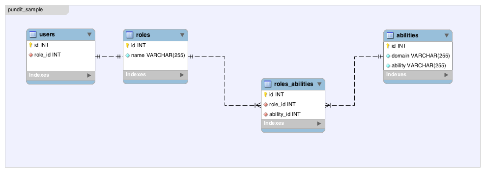

権限管理のgem、Punditの紹介
書いた人：鈴木雄大 (@nekogeruge_987)
はじめに
webアプリケーション開発において、ユーザーの権限管理はよくある悩ましい課題の1つだと思います。本記事ではその課題の解決策の1つとして、Punditというgemをご紹介します。
権限管理を行うgemといえばcancan（Rails4対応版はcancancan）が有名ですが、最近、実務（Railsアプリケーションの開発）で権限管理の実装を行うにあたりPunditとの比較を行い、Punditのシンプルな実装と柔軟性を気に入り、採用しました。
今回はPunditの使用方法に加え、ユーザーの権限管理の設計と実装を、簡単なCRUDができるサンプルアプリケーションを例にご紹介させていただきます。
また、アプリケーションはHerokuにホストしておりますので、動作確認はこちらでも可能です。
Pundit と権限情報管理の設計
サンプルアプリケーションではcontrollerにあるメソッド一つ一つに対して判定を行うのと、役割に対して実行できるアクションをユーザーが自由に設定させたいという理由で、後述するRolesテーブルとAbilitiesテーブルの組み合わせで実装を行っています。
しかし、Punditには、権限管理を行う上での制約や規約が用意されているわけではありません。権限情報の持たせ方や権限判定のロジックは利用者の設計に委ねられます。
サンプルアプリケーションほど厳密に行う必要が無い場合（例えば権限は管理者と一般ユーザーの2種類で良い）は、UsersテーブルのRoleカラムに”admin”という文字列を入れておいたり、adminというカラムを用意してbool値で判定したり、Rail4.1の新しい機能であるEnumを使用するといった実装も可能です。
このサンプルアプリケーションでの設計は Pundit を利用した一つの権限管理の実装例としてお読みください。
記事中での用語について
本記事内における「リソース」という単語はRailsアプリケーションが操作するオブジェクトの総称を指しています。
例えば、_rails generate scaffold user_や_rails generate scaffold book_した際の_user_や_book_のことを指します。
使用方法
app/policiesディレクトリの作成とpolicyファイルの準備
まず、下記の準備を行います (後述しますが、generate タスクが用意されています)。
- 各リソースに対してpolicyクラスを作成する
- 権限が適用される条件をpolicyクラスに実装する
権限が適用される条件とは具体的に、controllerに存在するメソッドが実行できる条件です。
例えば、_UsersController_の_update_メソッドが実行できる権限を実装する場合、_UserPolicy_クラスに_update?_というメソッドを作成します。最終的に、_UserPolicy.new(current_user, @user).update?_というメソッドが呼ばれるように実装していきます。
また、Punditには_authorize_というメソッドが用意されているので、引数にcontrollerに対応するモデルのインスタンスを渡し、controllerの_before_action_でメソッドを呼ぶようにすると便利です。具体的には、下記のような実装になります。
- _ApplicationController_でPunditモジュールをincludeしておく
- app/controllers/application_controller.rb
class ApplicationController < ActionController::Base
include Pundit
protect_from_forgery
end
class UsersController < ApplicationController
before_action :pundit_auth
...
private
def pundit_auth
authorize User.new
end
例えば_app/model/user.rb_に_User#admin?_いうメソッドを用意しておき、Userリソースはadminしか操作できないようにしておきたい場合には、_UserPolicy_クラスに下記のような実装を行います。
class UserPolicy < ApplicationPolicy
def update?
user.admin?
end
こうしておけば、_UsersController#update_が実行された際に_current_user.admin?_が呼ばれ、falseだった際に_NotAuthorizedError_という例外が発生するようになります。
これだけだとイメージが湧きづらいと思いますので、次はサンプルアプリケーションの実装例を見ていきましょう。
サンプルアプリケーションについて
Railsで実装したCRUDができる簡単なアプリケーションを用意しています。 また、ユーザー認証機能を持たせるために、deviseを使用しています。 deviseを選んだ理由は、認証機能を持たせるgemの中では今の所一番メジャーだと考えたためです。
動作環境
- Ruby2.1.2
- Rails4.1.1
- MySQL5.6.17
- OSX10.9.2(Marvericks)
設計
テーブル設計

権限情報の持たせ方
権限情報は、_Roles_テーブルと_Abilities_テーブル、中間テーブルの_RolesAbilities_テーブルによって保持されます。 _Abilities_テーブルの_domain_カラムに操作ができるリソースの名称を格納し、_ability_カラムに_domain_に対して可能なcontrollerのメソッド名を格納します。
サンプルアプリケーションはUserに対し、index, show, create, update, destroy_の操作ができるので、domain = userに対し、_index, show, create, update, destroy_の計5レコードを作成をします。管理者の場合は、_domain,_ability_共に_admin_の文字列が入っているというルールにします。
_Roles_に対してどの_Ability_が紐づいてるのかを中間テーブル_RolesAbilities_で管理し、その情報を_User#ability_メソッドで取得できるようにしておきます。この情報をもとに権限の有無を判定しています。
$ bin/rails console
4.1.0@2.1.1 (main)> User.find(1).ability
=> {
"admin" => [
[0] "admin"
]
}
4.1.0@2.1.1 (main)> User.find(1).admin?
=> true
4.1.0@2.1.1 (main)> User.find(2).ability
=> {
"user" => [
[0] "index",
[1] "show",
[2] "create",
[3] "update",
[4] "destroy"
]
}
4.1.0@2.1.1 (main)> User.find(2).admin?
=> false権限を判定するメソッドの実装
policyファイルの作成
RailsでPunditを使用する場合、app配下に_policies_ディレクトリを作成します。この作業は 通常Punditをinstallした際に使用できるようになるgenerateタスクで行います。
policies配下にはgenerateした際に_application_policy.rb_が作成されます。リソースごとの権限(policy)を設定するには_リソース名_policy.rb_を作成していきます。こちらもgenerateタスクで作成できます。
policyクラスの実装
policyクラスはcontrollerクラスと同じように、_application_policy.rb_の_ApplicationPolicy_クラスを各policyのクラスに継承する形で作成していきます。generateで作成した直後のコードは以下のようになっています。
class ApplicationPolicy
attr_reader :user, :record
def initialize(user, record)
@user = user
@record = record
end
def index?
false
end
def show?
scope.where(:id => record.id).exists?
end
def create?
false
end
def new?
create?
end
def update?
false
end
def edit?
update?
end
def destroy?
false
end
def scope
Pundit.policy_scope!(user, record.class)
end
end
class UserPolicy < ApplicationPolicy
class Scope < Struct.new(:user, :scope)
def resolve
scope
end
end
end
Userリソースに対して権限の判定ロジックを実装する場合、_user_policy.rb_に実装していきます。 まず、管理者の場合は全ての操作が可能なように実装します。 _authorize_メソッドを使用した場合、_user_は_current_user_になるのでこのように書けます。
def index?
user.admin?
end
def show?
user.admin?
end
def create?
user.admin?
end
def new?
create?
end
def update?
user.admin?
end
def edit?
update?
end
def destroy?
user.admin?
end
さらに、abilityごとの権限の判定を実装していきます。まず、_ApplicationPolicy_クラスに下記のメソッドを実装します。
def can?(ability)
(user.ability.include?(record.class.to_s.underscore) && user.ability[record.class.to_s.underscore].include?(ability))
end
User#abilityの返り値の中にリソース、メソッドの名称が存在しているかを判定するメソッドを記述します。 上記メソッドをUserPolicyクラスで使用すれば完了です。
def index?
user.admin? or can? "index"
end
def show?
user.admin? or can? "show"
end
def create?
user.admin? or can? "create"
end
def new?
create?
end
def update?
user.admin? or can? "update"
end
def edit?
update?
end
def destroy?
user.admin? or can? "destroy"
end
これは例えば、UserPolicy_で_can?(“update”)_が実行された際、(user.ability.include?(“user”) && user.ability[“user”].include?(“update”))_が実行されるようになります。
これで権限が存在しないユーザーが各メソッドを実行した場合は例外が発生するようになります。 404に飛ばしたい場合は、_ApplicationController_で下記のように例外をキャッチしてあげればOKです。
rescue_from NotAuthorizedError, with: :render_404
def render_404(exception = nil)
if exception
logger.info "Rendering 404 with exception: #{exception.message}"
end
render file: "#{Rails.root}/public/404.html", status: 404, content_type: 'text/html'
end
Punditの仕組み
ではなぜ、これだけの実装で権限管理機能が実現できているのかを、_authorize_メソッドの処理を追いながら見ていきましょう。
def authorize(record, query=nil)
query ||= params[:action].to_s + "?"
@_policy_authorized = true
policy = policy(record)
unless policy.public_send(query)
error = NotAuthorizedError.new("not allowed to #{query} this #{record}")
error.query, error.record, error.policy = query, record, policy
raise error
end
true
end
まず、変数queryに”呼び出されたメソッドの名前” + “?”を格納します。 _@_policy_authorized_は_authorize_メソッドが呼び出されたかどうかのフラグのようなものなので無視します。
次に、policyメソッドの結果を変数policyに格納しています。ここで引数になっているrecordはUserのインスタンスです。 （サンプルアプリケーションだと_User.new_しただけのオブジェクト）
policyメソッドを見ていきましょう。
def policy(record)
@policy or Pundit.policy!(pundit_user, record)
end
attr_writer :policy
def pundit_user
current_user
end
policyメソッドはPundit.policy!メソッドを呼んでいます。また、pundit_userはcurrent_userを呼び出していることがわかります。 Pundit.policy!メソッドを見ていきましょう。
def policy!(user, record)
PolicyFinder.new(record).policy!.new(user, record)
end
ちょっとわかり辛いですが、順に追っていきます。 まず、PolicyFinder#policy!メソッドを呼んでいます。 PolicyFinderクラスは短いので全部載せてしまいます。
module Pundit
class PolicyFinder
attr_reader :object
def initialize(object)
@object = object
end
def scope
policy::Scope if policy
rescue NameError
nil
end
def policy
klass = find
klass = klass.constantize if klass.is_a?(String)
klass
rescue NameError
nil
end
def scope!
scope or raise NotDefinedError, "unable to find scope #{find}::Scope for #{object}"
end
def policy!
policy or raise NotDefinedError, "unable to find policy #{find} for #{object}"
end
private
def find
if object.respond_to?(:policy_class)
object.policy_class
elsif object.class.respond_to?(:policy_class)
object.class.policy_class
else
klass = if object.respond_to?(:model_name)
object.model_name
elsif object.class.respond_to?(:model_name)
object.class.model_name
elsif object.is_a?(Class)
object
else
object.class
end
"#{klass}Policy"
end
end
end
end
_PolicyFinder#policy!_内で_PolicyFinder#policy_メソッドを呼んでいます。 _PolicyFinder#policy_は何をしているのかというと、_find_というprivateメソッドを呼んでその結果を返しています。 _find_の処理を見てみると、newした際に渡されてきたobject(ここではUserのインスタンス)のクラス名を取得し、最終的に”オブジェクトのクラス名” + “Policy”という文字列にして返しているのがわかります。 _policy_メソッドに戻ると、_find_で返ってきた文字列をconstantize（文字列をクラスとして扱うactivesupportのメソッド）してreturnしています。つまり、_PolicyFinder.new(record).policy!.new(user, record)_は_UserPolicy.new(user, record)_を行っているということになります。
要は、_authorize_メソッド内で呼ばれている_policy = policy(record)_という処理は、_authorize_メソッドで渡されたインスタンスからそのインスタンスのpolicyクラスを取得し、そのpolicyクラスのインスタンスを生成しているのです。
その後の_policy.public_send(query)_は_UserPolicy.new(User.new).update?_を実行しているということですね。メタプログラミングをうまく使った実装になっています。
viewの実装（リンク表示/非表示の制御）
次はviewです。サンプルアプリケーションではhelperに下記メソッドを追加しています。
module UsersHelper
def user_show?(user = current_user)
Pundit.policy(user, User.new).show?
end
def user_edit?(user = current_user)
Pundit.policy(user, User.new).edit?
end
def user_destroy?(user = current_user)
Pundit.policy(user, User.new).destroy?
end
def user_create?(user = current_user)
Pundit.policy(user, User.new).create?
end
end
上記のようにしておくと、各メソッドを呼び出すリンクに対して下記のように記述ができるようになります。
h1 Listing users
table
thead
tr
th Name
th Role Id
th Role Name
th Email
th
th
th
tbody
- @users.each do |user|
tr
td #{user.name}
td #{user.role_id}
td #{user.role.name}
td #{user.email}
- if user_show?
td = link_to 'Show', user
- if user_edit?
td = link_to 'Edit', edit_user_path(user)
- if user_destroy?
td = link_to 'Destroy', user, method: :delete, data: { confirm: 'Are you sure?' }
br
* if user_create?
= link_to 'New User', new_user_pathしかし、これは冗長な記述で条件分岐も多くなるため、ここまで厳密に管理する必要がないのであればpartialで分けてしまう方法でもいいかもしれません。
また、helperメソッドはデフォルト引数を指定するようにしていますが、これはテストをしやすくするようにするためです。UnitTestを実行した際は_current_user_が作成されないため、引数でテストしたいUserのオブジェクトが指定できるようにしてあります。
具体的には、下記のようになります。
require 'spec_helper'
describe UsersHelper do
describe ".user_show?" do
context '管理者' do
include_context "管理者"
subject { user_show?(user) }
it { should be_true }
end
context '権限保持者' do
include_context "User"
subject { user_show?(user) }
it { should be_true }
end
context '権限非保持者' do
include_context "Role"
subject { user_show?(user) }
it { should be_false }
end
end
...
end
Scopeについて
PunditにはScopeという機能があります。 generatorでpoclicyを作成した際、このようなメソッドがデフォルトでついてきます。
- app/policies/user_policy.rb
class UserPolicy < ApplicationPolicy
class Scope < Struct.new(:user, :scope)
def resolve
scope
end
end
end
これはどういう時に使う機能かというと、例えばindexメソッドで一覧を作成した際に、ユーザーの権限ごとに表示するレコードを制御したい際に役に立ちます。 例えば、ログインしたユーザーが管理者以外の場合、indexで表示されるユーザーに管理者ユーザーは表示したくない場合は下記のように実装します。
scope :except_admin, -> {
joins(:role).where.not(roles: { name: "administrator" } )
}
class Scope < Struct.new(:user, :scope)
def resolve
if user.admin?
scope.all
else
scope.except_admin
end
end
end
def index
@users = policy_scope(User)
end
_policy_scope_メソッドは_authorize_と同様、渡されたオブジェクトのPolicyクラスを探し出して_resolve_メソッドを実行を行っています。
Roleごとに許可するパラメータを分ける
サンプルアプリケーションでは実装していないのですが、policyクラスを利用してStrongParametersで許可するパラメータを権限ごとに分けるという使い方がREADMEで紹介されています。
READMEではブログシステムを例に、
- 管理者および記事のオーナーの場合はタイトル、内容、タグの編集を許可する
- それ以外はタグの編集のみ許可する
というケースをでの使い方の紹介をしています。
まず、policyクラスに_permitted_attributes_というメソッドを用意し、権限ごとに許可するパラメータの配列を定義します。
# app/policies/post_policy.rb
class PostPolicy < ApplicationPolicy
def permitted_attributes
if user.admin? || user.owner_of?(post)
[:title, :body, :tag_list]
else
[:tag_list]
end
end
end
controllerのStrongParametersの設定を行うメソッド内で_permitted_attributes_メソッドを呼び、permitに渡す引数を動的に定義しています。
# app/controllers/posts_controller.rb
class PostsController < ApplicationController
def update
@post = Post.find(params[:id])
if @post.update(post_params)
redirect_to @post
else
render :edit
end
end
private
def post_params
params.require(:post).permit(*policy(@post || Post).permitted_attributes)
end
end
テストについて
Punditにはpolicyクラスのテストを行うために、_permissions_という独自のmatcherが用意されており、_spec_helper_でrequireすることで使用することができます。 サンプルアプリケーションでは_shared_context_を使ってuserのオブジェクトの作成をしていますので、このように書いています。
require 'spec_helper'
describe UserPolicy do
subject { UserPolicy }
...
permissions :update? do
context '管理者' do
include_context "管理者"
it { should permit(user, User.new) }
end
context '権限保持者' do
include_context "User"
it { should permit(user, User.new) }
end
context '権限非保持者' do
include_context "Role"
it { should_not permit(user, User.new) }
end
end
...
しかし、これだけでは前述のScope機能のテストが行えないのでcontrollerのテストでカバーする必要がありそうです。 また、READMEの中でまた違ったテストの方法のアプローチが紹介されています。
まとめ
このように、PunditはメタプログラミングとRailsの機能をうまく利用し、少ないコードでうまく権限管理の機能を実現しています。権限の判定のロジックもリソース毎、メソッド毎に分離しており、自由に実装できて柔軟性も高いです。また、@znzさんのブログにもある通り、Railsの変化にも強そうです。
個人的には、メタプログラミングの勉強としても参考になるコードだと感じています。前述の通りコードの量も非常に少ないので、コードリーディングのお題としてもおすすめです。
Punditを使用する際の注意点
Punditを使う際には以下の注意点があります。
名前空間が異なる同じ名前のクラスがある場合、本来取得したいクラスのPolicyが取得できない可能性がある。
私が直面した問題ではないのですが、PolicyFinderのfindメソッドは上記のケースが考慮されていません。このようなケースの場合はパッチを書く必要があります。
Rails以外だと使用し辛い
Rails以外でも使えなくも無いですが、基本的にRailsで使われることが前提の作りになっているように感じます。また、activesupportは必須です。
current_userメソッドを作成する必要がある
pundit_userを見ると、current_userメソッドが存在することが前提となっています。また、current_userをpundit_userで使用したくなければoverrideするようにREADMEに記載があります。
どこまでテストを行うか
これは個人的な悩みなのですが、サンプルアプリケーションではshared_exampleとshared_contextを利用してユーザーのコンテキストごとに全てテストを実行するようにしています。書いた時はこれで良いと思っていたのですが、リソースが増えてくるにつれてテストの量がふくれ上がってきます。権限のカバーができているかはpoliciesに任せてしまい、controllerやrequestのテストにおいては全てのユーザーコンテキストをカバーするのではなく、権限管理の異常系はクリティカルな部分のみに絞ったり、特定のリソースの全ケースをカバーするのみにとどめても良いのかもしれません。このあたりのご意見をプルリクエストやtwitterでいただけるととても嬉しいです。
著者について
鈴木雄大 (@nekogeruge_987) (有) エクスヴィジョンズ所属。最近Webサービス企業から小規模SIerに転職し、Ruby、Railsの受託開発の仕事をしています。Hubotに会社の雑務を行わせるのがマイブーム。